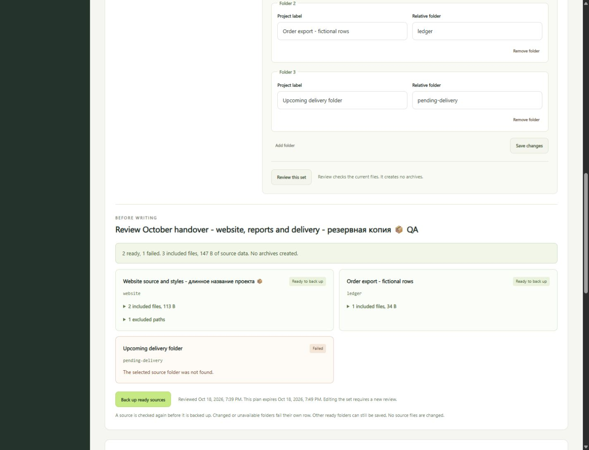
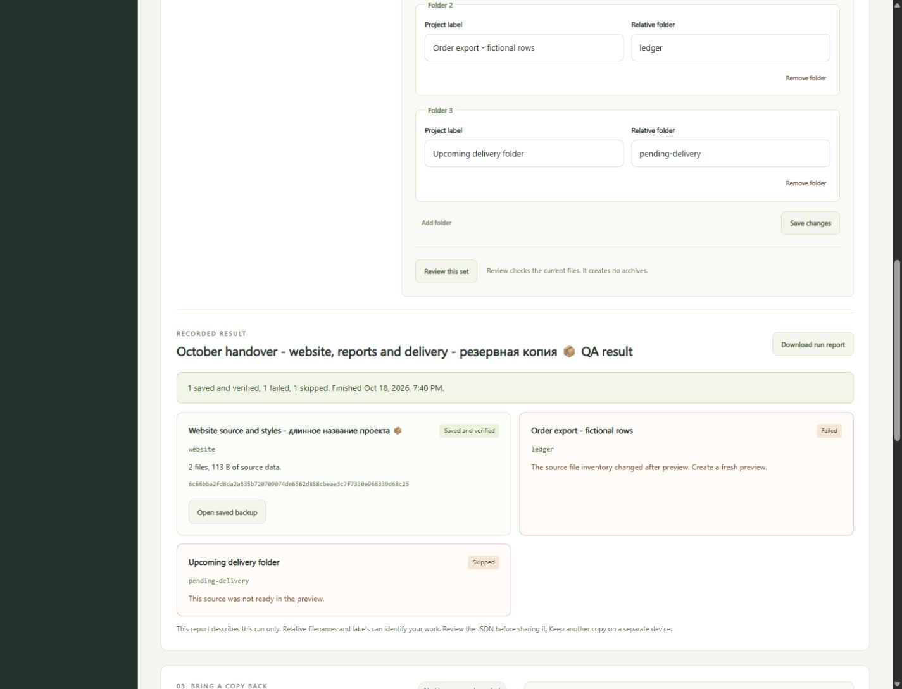

Keep the folder list.
Name a set and add relative folders from your configured workspace. Save up to 12 sets with 8 non-overlapping folders in each. Saving a list does not create a backup.
Save the folders you back up together. Review their current files, create separate verified copies and see exactly which sources completed.
Version 0.5.0-candidate.1. Requires Node.js 24. This page presents the app. Backup operations run on your computer after you extract the source and start the local server.

Name a set and add relative folders from your configured workspace. Save up to 12 sets with 8 non-overlapping folders in each. Saving a list does not create a backup.
Inspect file paths, sizes, hashes and exclusions. Missing or unsafe folders fail their own row. Edits require another review, and plans expire after ten minutes.
The app checks ready sources again and verifies each new archive. Changed sources fail. Sources that failed review are skipped. A dated JSON report keeps the result.

node server.mjs http://127.0.0.1:4330/ npm test
Built with Node.js modules and browser JavaScript. No runtime package installation or cloud account is required. Stop the app with Ctrl+C. The README explains how to choose your workspace, backup storage and port.

A source is rescanned and rehashed before backup. The verified archive inventory must also match the reviewed paths, byte counts and hashes before it enters the library. One failed folder does not hide the other outcomes.
Each plan is used once. Restarting the server clears plans, while saved sets and library records remain. The run report is available until you refresh the library or edit a set. Download it if you need to keep the full batch result.
The report omits absolute workspace and storage paths. Labels and relative filenames can still identify your work. Review it before sharing. Hashes establish consistency, not ownership or a trusted origin.
Open saved backup selects the exact completed copy. Verify it, compare changes or review a recovery destination. Recovery checks the archive again and refuses an existing destination.
The tested website archive recovered both original files byte for byte. The source folder stayed unchanged. File paths and contents are restored, not empty folders, original timestamps or permissions.
The whole-library check guide remains available. See recovery plans and verification downloads. Import an existing Archive Desk ZIP.
The backend and CLI suite covers saved sets, restart persistence, duplicate and overlapping folders, corrupt settings, read-only review, changed files, stale plans, replay refusal, Unicode labels, independent archives and recovery.
The actual source ZIP was freshly extracted. All 18 source files matched their recorded hashes and the same 40 tests passed again. The extracted app reopened the saved profile and existing library through its browser interface. Repeated checks are not extra unique tests.
Browser checks covered save and edit, reload, review invalidation, the partial result, actual JSON download and verified recovery. Populated layouts were inspected at 320, 390, 768, 1024 and 1440 pixels without horizontal overflow.
Stop programs that can change files while backing up. The scan is not an atomic snapshot or an adversarial filesystem race guarantee. Keep another verified copy on a separate device. This is independent product work with synthetic data, not a production backup service or customer acceptance.